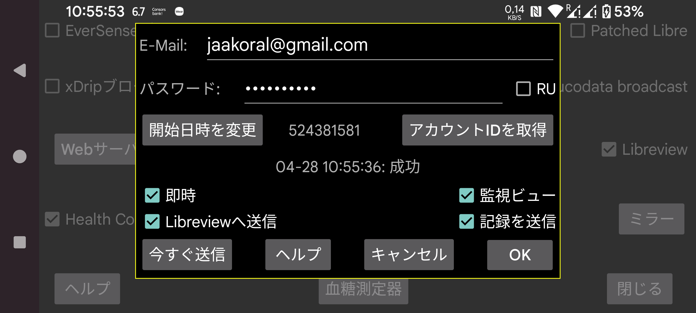

ar be de es fr hi it ja nl pl pt ru tr uk uz zh en
Juggluco は血糖データと記録を Libreview に送信できます。
Librelink アプリと同様に、過去 89 日間のデータを Libreview に送信します。
このサービスを利用するには、https://libreview.com で Libreview アカウントを作成し、ここでメールアドレスとパスワードを指定する必要があります。同じ期間のデータを同じ Libreview アカウントに複数回送信しないでください(例えば Librelink アプリと Juggluco から)。Libreview の アカウント設定 → My devices で既存のデバイスを削除できます。また、新しい Libreview アカウントを作成することもできます。
これをオンにするには、「Libreview に送信」もチェックする必要があります。
Juggluco は、過去 20 分以内に行われていない場合、Juggluco から離れるたびに新しいデータを Libreview に送信します。「今すぐ送信」を押すことで手動で Libreview に送信することもできます。
血糖値の他に、記録も Libreview に送信できます。そのためには「記録を送信」をタッチして、各ラベルが何を意味するかを指定する必要があります。
RU: https://libreview.com ではなく https://libreview.ru を使用する場合に設定する必要があります。これは Libre 2 センサーにのみ適用されます。Libre 3 センサーは libreview.com でのみ使用できます。これはロシア版の Abbott Libre 3 アプリが存在しないためです。
即時: Libre 2 や 3 センサーから血糖値が到着すると、即座に Libreview に送信します。これは LibreLinkUp と組み合わせる場合にのみ有用です。利用するには、Abbott の Libre アプリのいずれかでこの Libreview アカウントに LibreLinkUp 接続を追加する必要があります。(あなたの国に Abbott Libre アプリがない場合は、パッチ適用済み Libre 3 アプリを使用できます。)LibreLinkUp の表示は自動的に再描画されないため、値が即座に表示されないことがあります。LibreLinkUp の使用は、よく見ないと非常に危険です。グラフをタッチすると、現在の血糖値ではなく古い値が表示されるためです。
閲覧を監視: このオプションを設定すると、Juggluco は値が閲覧されたかどうかを Libreview に送信します。このオプションをオフにすると、Juggluco は常に閲覧されていないと言います。このオプションが Libreview にこの情報を確実に送信するのは 即時 もオンの場合のみです。Libre 3 からのすべての閲覧をキャッチするためには、Juggluco が常にインターネットに接続されている必要があります。Libre 2 はキルされない限りすべてを記憶します。
開始を変更: 新規開始; 指定した日時からデータを再送信します。新しい Libreview アカウントに切り替えるときに押す必要があります。
Libreview への最後の送信試行の結果は、「アカウント ID の取得」ボタンの下に表示されます。
Libreview は分析に履歴値を使用し、Juggluco は統計画面(左中メニュー → 統計)にストリーム値を使用します。この違いにより、Libreview と Juggluco の統計の間に小さな違いが生じます。ストリーム値の方が極端であるため、Juggluco はやや否定的になります: 目標範囲内の時間が短く、変動が大きくなります。Juggluco による センサーが有効な時間 も短くなります。欠落するすべてのストリーム値を数えるためです。
Juggluco は同時に複数のセンサーに接続できますが、Librelink は一度に 1 つのセンサーしか扱えません。Juggluco も Libreview には一度に 1 つのセンサーのデータのみを送信します。これは、まず 1 つのセンサーのデータを送信し、そのセンサーのデータが利用できなくなった後にのみ次のセンサーのデータを送信することで行われます。Juggluco が次のセンサーに切り替わると、Librelink の単一センサーポリシーを模倣するため、Juggluco は前のセンサーには戻りません。これは、複数のセンサーを同時に動かしていて、後で追加されたものが先に追加されたセンサーより早く終了する場合、この先に追加されたセンサーは Libreview にデータを送信しなくなることを意味します。
アカウント ID の取得: Libreview にデータを送信せずに LibreView アカウント ID のみを受信したい場合、メールアドレスとパスワードを入力して「アカウント ID の取得」を押します。このボタンの前の同じ行にアカウント ID が表示されます(これには時間がかかることがあり、画面は自動的に更新されません)。LibreView サーバーからアカウント ID を取得することで、Abbott の Libre 3 アプリで既に使用された FreeStyle Libre 3 センサーを、この LibreView アカウントで使用できるようになります。
Libreview レポートのアドレスバーに表示される UUID から、Libreview アカウント ID 番号を 変換して Juggluco に手動で入力することもできます。
Sibionics と Dexcom センサーのデータは Libreview に送信されません。
Libreview 形式でデータを保存したい場合は、左中メニュー → エクスポートまたは Juggluco の Web サーバーでも行えます。Dexcom と Sibionics センサーの血糖値も含まれます。